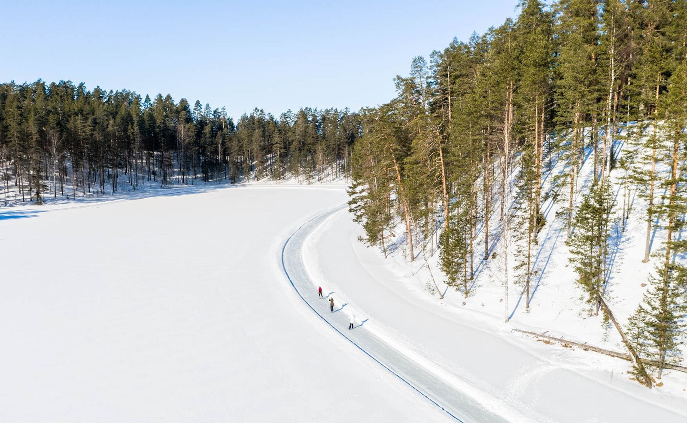
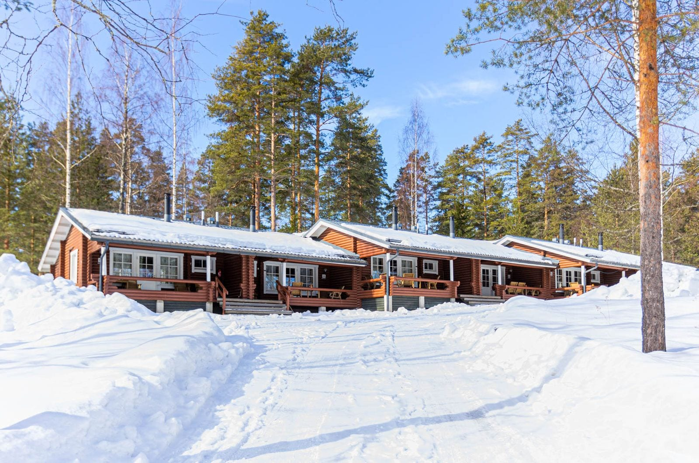
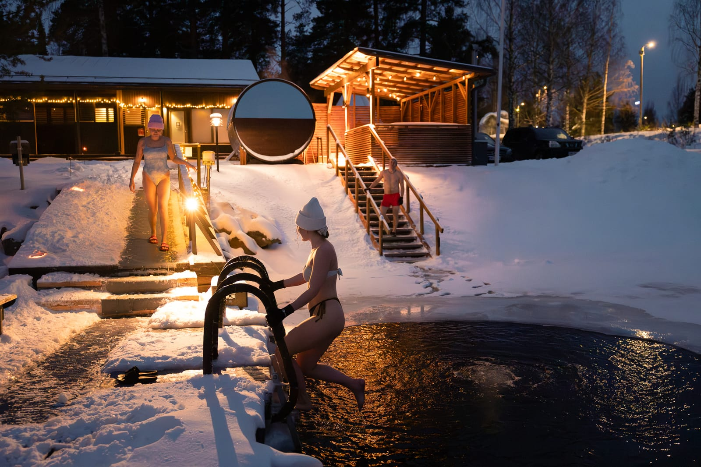

Inclusief fly & drive
Vanaf €895
Punkaharju, Finland
Punkaharju
Schaats door het prachtige Finse merengebied bij Punkaharju. De natuurijsbaan op het Saimaameer loopt door een indrukwekkend winterlandschap, met bossen en bevroren water om je heen.
Je verblijft in een eigen huisje met sauna. Je gaat zelfstandig op pad en bepaalt zelf wanneer en hoe lang je het ijs op gaat.
- Soort reis
- Zelfstandig, zonder begeleiding
- Verblijf
- Eigen huisje met sauna
- Prijs
- Vanaf €895

